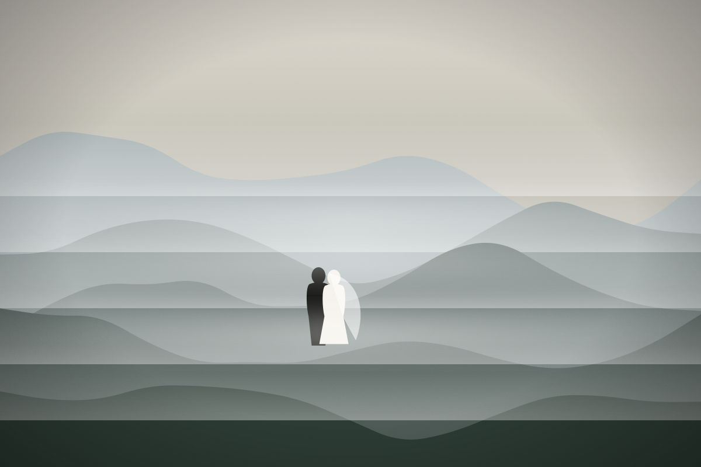

Elopements ·
Eleven minutes of light in Glencoe
Planning an elopement around Scottish weather means planning for everything. Here's how we used the eleven minutes the sky gave us.
By Ines Morrow · 7 min read

Hannah and Lewis wrote to me in February with a short brief: “Small, outdoors, Scotland, and we really don't mind rain.” Seven months later we stood in a car park at the foot of Buachaille Etive Mòr, watching the forecast change for the fourth time that morning.
Elopements in the Highlands are planned around the weather rather than against it. We had three possible ceremony spots, two backup times, and one rule: nobody apologises for the rain. Their celebrant, a retired geography teacher called Moira, arrived in a full-length waxed coat and a pair of wellies covered in stickers.
Planning for every sky
The first spot, a ridge above the glen, was already in cloud by nine. The second, beside a small lochan, was sheltered and quiet, with the mountain behind us whenever the mist allowed. We walked up slowly, stopping when the light was good and not worrying when it wasn't.

At 11:40 the rain thinned, the cloud lifted off the ridge, and for eleven minutes the whole glen was lit from the side. Moira read the vows a little faster than planned. Nobody minded.
“We stood there soaked through, laughing, and for eleven minutes the mountain decided to join in.”
Then the weather closed again and we walked down for tea from a flask and shortbread from Lewis's mum. Some of my favourite frames from the day are from that walk back: wet jackets, a veil tucked into a pocket, two people who had just done exactly what they wanted.
What I'd tell anyone planning an elopement
Choose the place before the date, keep the plan flexible, pack layers for everyone (including your photographer), and give yourselves time. The best light of the day lasted eleven minutes. We were only there for it because we weren't in a hurry.
